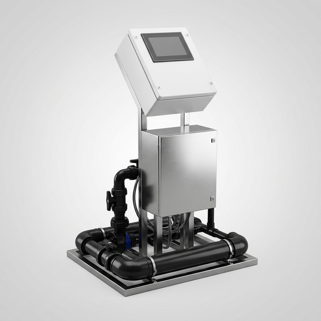
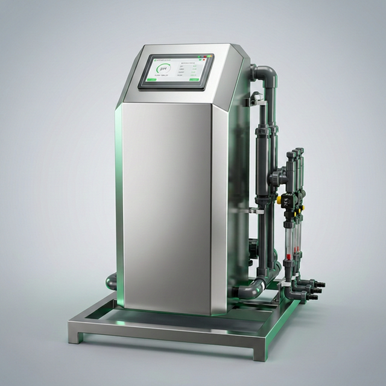
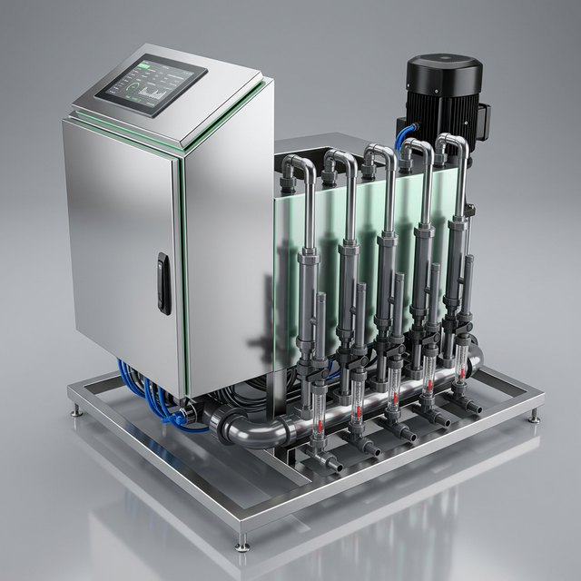
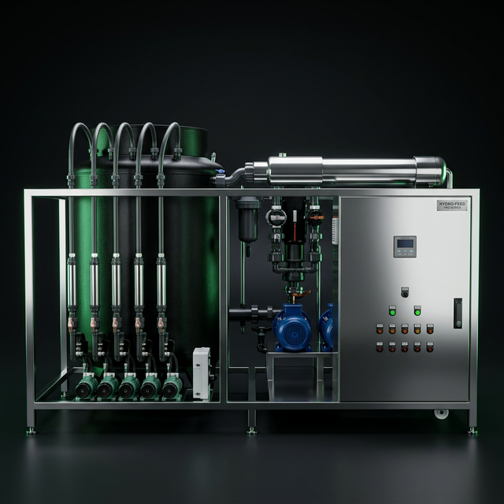

Sera Sulama Makinesi ve Gübreleme Makineleri
OK Otomasyon olarak 2000 yılından bu yana sera sulama makinesi ve gübreleme makinesi üretiminde Türkiye'nin lider firmalarından biriyiz. Kendi Ar-Ge ekibimiz tarafından tasarlanan ve üretilen sulama ve gübreleme makinelerimiz, bilgisayar kontrollü EC/pH dozlama sistemi, tam krom gövde ve SCADA entegrasyonu ile profesyonel sera işletmelerinin ihtiyaçlarını karşılamaktadır.
Sulama ve Gübreleme Makinesi Modellerimiz
Her sera işletmesinin kapasitesi ve ihtiyacı farklıdır. Bu nedenle sulama makineleri modellerimizi küçük ölçekli seralardan büyük endüstriyel sera projelerine kadar geniş bir yelpazede üretiyoruz. Tüm modellerimizde EC dozlama, pH dozlama, otomatik gübre karıştırma ve drenaj kontrol standart olarak sunulmaktadır.

MİNİMİX — Kompakt Sulama ve Gübreleme Makinesi
Küçük ve orta ölçekli seralar için ideal kompakt sulama makinesi. Saatte 2 barda 30m³ sulama kapasitesi, 2+1 kanallı EC/pH gübre dozlama sistemi, krom pompa ve gövde, bypass bağlantı. Damla sulama otomasyonu ile tam uyumlu çalışır.
- Kapasite: 30m³/saat (2 bar)
- Gübre Kanalı: 2+1 kanallı dozajlama
- Gövde: Krom pompa, krom gövde
- Bağlantı: Bypass bağlantı sistemi

PROMİX — Profesyonel Sulama ve Gübreleme Makinesi
Profesyonel sera işletmeleri için tasarlanan sulama ve gübreleme makinesi. 85m³/saat yüksek kapasiteli sulama, 4+1 kanallı gübre dozlama, tam krom gövde, bypass ve mix bağlantı sistemi. Sulama otomasyonu ve gübreleme otomasyonu tek merkezden yönetilir.
- Kapasite: 85m³/saat (2 bar)
- Gübre Kanalı: 4+1 kanallı dozajlama
- Gövde: Tam krom endüstriyel gövde
- Bağlantı: Bypass + Mix tanklı sistem

PROMAX — Endüstriyel Sulama ve Gübreleme Makinesi
Yüksek kapasiteli endüstriyel gübreleme makinesi ve sulama makinesi. Tam krom yapı, SCADA entegre kontrol, bypass + mix + çoklu hat bağlantısı. Büyük ölçekli sera sulama otomasyonu, sera gübreleme otomasyonu ve iklimlendirme otomasyonu tek merkezden yönetilebilir.

ALP 2017 — Amiral Gemisi Sulama ve Gübreleme Sistemi
En üst seviye endüstriyel sulama ve gübreleme makinesi. AgriNexus SCADA ile tam entegre uzaktan sulama kontrol ve sera izleme. Maksimum endüstriyel debi ile büyük ölçekli sera projelerinin tüm sulama ve gübreleme ihtiyaçlarını karşılar. Bitki gelişim kontrol ve drenaj kontrol dahildir.
Sulama ve Gübreleme Makinelerimizin Özellikleri
Tüm sera sulama makineleri ve gübreleme makineleri modellerimizde ortak olarak bulunan özellikler:
- EC Dozlama ve pH Dozlama: Otomatik EC ve pH kontrol ile hassas gübre dozlama. EC transmitter ve pH transmitter ile sürekli ölçüm.
- Bilgisayar Kontrollü Sulama: Akıllı yazılım ile programlanabilir sulama reçeteleri, zone bazlı sulama otomasyonu
- Gübre Karıştırma ve Enjeksiyon: Çoklu gübre tankından otomatik gübre karıştırma ve gübre enjeksiyon sistemi
- Drenaj Kontrol: Otomatik drenaj kontrol sistemi ile artık gübrenin geri kazanımı ve yeniden kullanımı
- Damla Sulama Otomasyonu: Serada damla sulama sistemi için optimize edilmiş kontrol altyapısı
- SCADA Entegrasyonu: AgriNexus SCADA yazılımı ile uzaktan sera izleme ve kontrol
- Uzaktan Sera İzleme: Bilgisayar, tablet ve telefondan uzaktan sera kontrol ve izleme
- Tam Krom Yapı: Endüstriyel sınıf krom pompa ve gövde, uzun ömürlü ve korozyona dayanıklı
Neden OK Otomasyon Sulama Makinesi?
Sulama makineleri piyasasında hazır çözümlere bağımlı kalmadan, kendi Ar-Ge ekibimiz tarafından Antalya'daki üretim tesisimizde tasarlanır ve üretilir. 2000 yılından bu yana 500'den fazla sera sulama otomasyonu projesi tamamladık. Türkiye dahil 7 farklı ülkede anahtar teslim sera projeleri gerçekleştirdik.
Sera sulama sistemleri konusunda uzman mühendislik kadromuz, projenize özel çözüm sunar. Topraksız tarım ve hidroponik sera sistemleri için de optimum sulama ve gübreleme otomasyonu sağlar.
Gübre Vanaları ve Kontrol Elemanları
Sulama ve gübreleme otomasyonundaki gübre vanaları kritik öneme sahiptir. Baccara ve FIB marka endüstriyel selenoid ve motorlu vanalar kullanılır. Sera vana kontrol sistemi ile her hat bağımsız yönetilir.
Sera Sulama Makinesi İçin Teklif Alın
Sera projenize en uygun sulama ve gübreleme makinesi modelini birlikte belirleyelim.
📩 Teklif Alveya WhatsApp: +90 533 494 71 93